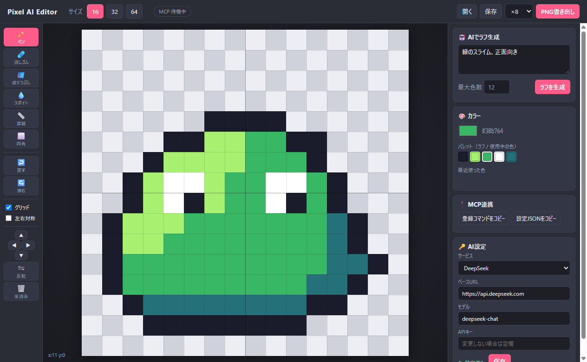

AI がラフを描き、
あなたが仕上げる。
16×16・32×32・64×64 のドット絵エディタ。お題を書けば AI が下絵を描き、そのまま自分の手で直せます。MCP 対応の AI エージェントから描かせることも。
Windows 10/11 (x64)・無料・MIT ライセンス／AI 機能には各サービスの APIキーが必要です（ローカルLLMならキー不要）

特長
下絵づくりは AI に任せて、こだわりたい部分だけ自分で。
🤖
AI ラフ生成
「青い剣を持った騎士」のように書くだけで、指定サイズ・色数のドット絵がキャンバスに置かれます。
✏️
手直しツール一式
ペン・消しゴム・塗りつぶし・スポイト・直線・四角・左右対称・反転・Undo/Redo。
🫥
下絵モード
AI のラフを半透明で重ねて表示。上からなぞって自分の線で描き直せます。
🔌
MCP 対応
Claude・Cursor・VS Code など MCP 対応アプリから描画・確認・書き出し。起動中のアプリにリアルタイムで反映。
🖼️
PNG 書き出し
等倍・×8・×16 で書き出し。作業途中はプロジェクトファイルで保存できます。
🔒
キーはローカルに
APIキーはあなたの PC にだけ保存。通信は選んだ AI サービスとだけ行います。
はじめかた
インストールから最初の 1 枚まで、数分で。
- インストーラーをダウンロードして実行Releases の
Pixel-AI-Editor-Setup-x.y.z.exe。SmartScreen の警告が出たら「詳細情報」→「実行」。 - AI サービスを選んでキーを設定アプリ右下の「AI設定」で DeepSeek・OpenAI・Claude・Gemini・OpenRouter・Ollama などから選び、APIキーを貼り付けて保存。OpenAI 互換 API なら何でも使えます。
- サイズを選んでお題を入力16 / 32 / 64 から選び、「ラフを生成」。数秒〜1分ほどでキャンバスに下絵が届きます。
- 手直しして書き出し気になるところを直して「PNG書き出し」。Ctrl+Z でいつでも戻れます。
AI エージェントから描かせる（MCP）
アプリ右側の「MCP連携」ボタンで、あなたの PC 用の登録設定をコピーできます。Node.js は不要です。
# Claude Code に登録（アプリのボタンでコピーしたものを貼り付け） > claude mcp add pixel-editor -s user \ -e ELECTRON_RUN_AS_NODE=1 -- \ "...\Pixel AI Editor.exe" "...\mcp-server.mjs" # あとは頼むだけ > 32×32で宝箱のドット絵を描いて。 描いたら確認して、影を足して仕上げて。
AI は文字グリッドでまとめて描き、get_canvas で画像を見ながら仕上げます。描かれた絵はそのままアプリで手直しでき、Ctrl+Z で 1 操作ずつ戻せます。
open_editorget_canvasnew_canvasdraw_rowsset_pixelsfilldraw_linedraw_rectclear_canvasundoredogenerate_roughexport_png